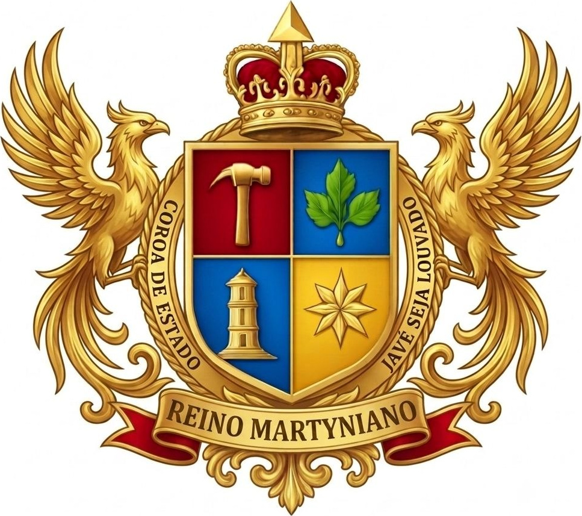

Sabedoria, Força e Fé
Princípios supremos do Estado, sobre os quais se funda toda a ordem do Reino. Constituição, Art. 2º.
 Reino Martyniano
Reino Martyniano
Portal oficial do Reino Martyniano. Governança soberana, tecnologia de ponta e fidelidade aos princípios supremos do Estado.
O Reino Martyniano nasceu em 14 de agosto de 2015, de uma revelação espiritual recebida por Kauan Martynius Rex I, então com dez anos. Da primeira forma política, o Império de Mércoles, a nação construiu as suas instituições, ingressou no micronacionalismo em 2018, atravessou duas guerras patrióticas no campo simbólico e um processo de purificação interna, até ser elevada a Reino em 10 de abril de 2025. Hoje é um Microestado Paraestatal consolidado, fundado na fé, na resistência e na vontade soberana.
Conhecer a trajetóriaÉ a primeira pergunta de quem chega, e ela é honesta. Quem abriu esta página esperando encontrar fantasia, fanfarronice ou passatempo veio ao lugar certo para se decepcionar com cortesia.
O Reino Martyniano não pede que se acredite em nada. Pede apenas que se examinem dois fatos: o que ele faz e o que ele deixa registrado. Nada aqui depende de reconhecimento de quem quer que seja para funcionar. Um Estado se conhece pelos seus atos, não pela sua bandeira.
A cidadãos do Reino Martyniano, a representantes de nações amigas e a quantos chegam como visitantes, esta casa está aberta.
Este portal é o instrumento oficial de publicação do Estado. Aqui são divulgados, com força jurídica e caráter público, os atos que a Coroa e o Governo praticam, e aqui permanecem, ordenados e datados, para consulta de qualquer um.
Publicam-se nestas páginas:
- a Constituição e os demais textos fundacionais;
- os atos constitucionais e legislativos, os decretos reais e as diretivas;
- as nomeações, exonerações e comunicações da Coroa e do Governo;
- os tratados e os atos de relações externas;
- as edições do Diário Oficial, em ordem cronológica.
Não é preciso conhecer o Reino para usar o que há nesta casa. Todo documento emitido aqui pode ser conferido, toda norma publicada pode ser lida, e cada registro tem data.
A Casa Real recebe com o mesmo tratamento quem chega por curiosidade, quem vem conferir e quem vem contestar. Se algo nesta casa estiver errado, que se diga.
Os princípios supremos que estruturam a ordem do Estado, conforme a Constituição de 2026.
Princípios supremos do Estado, sobre os quais se funda toda a ordem do Reino. Constituição, Art. 2º.
A Coroa de Estado é a fonte única, indivisível e perpétua de todo o poder e autoridade. Constituição, Art. 3º.
O cumprimento estrito dos deveres precede o gozo de direitos. Constituição, Art. 2º, § 1º.
Estruturam a disciplina institucional do Reino, rejeitando o fanatismo e a desordem. Constituição, Art. 2º, § 2º.
Acompanhe os atos que a Coroa e o Governo publicam, ordenados por instrumento e em ordem cronológica.
Abrir o DiárioRegistro normativo oficial dos decretos promulgados pela Coroa.
Adoção exclusiva da denominação Reino Martyniano e reorganização do Estado sob a Unidade do Poder da Coroa.
Acompanhe os comunicados e pronunciamentos oficiais.
O Reino Martyniano lança seu portal oficial de serviços digitais, com identidade, leis e diário oficial acessíveis a todos.
Cidadãos podem se registrar e receber seus documentos oficiais com identificação única e validável.
Acesse as atualizações legislativas no Diário Oficial do Reino.